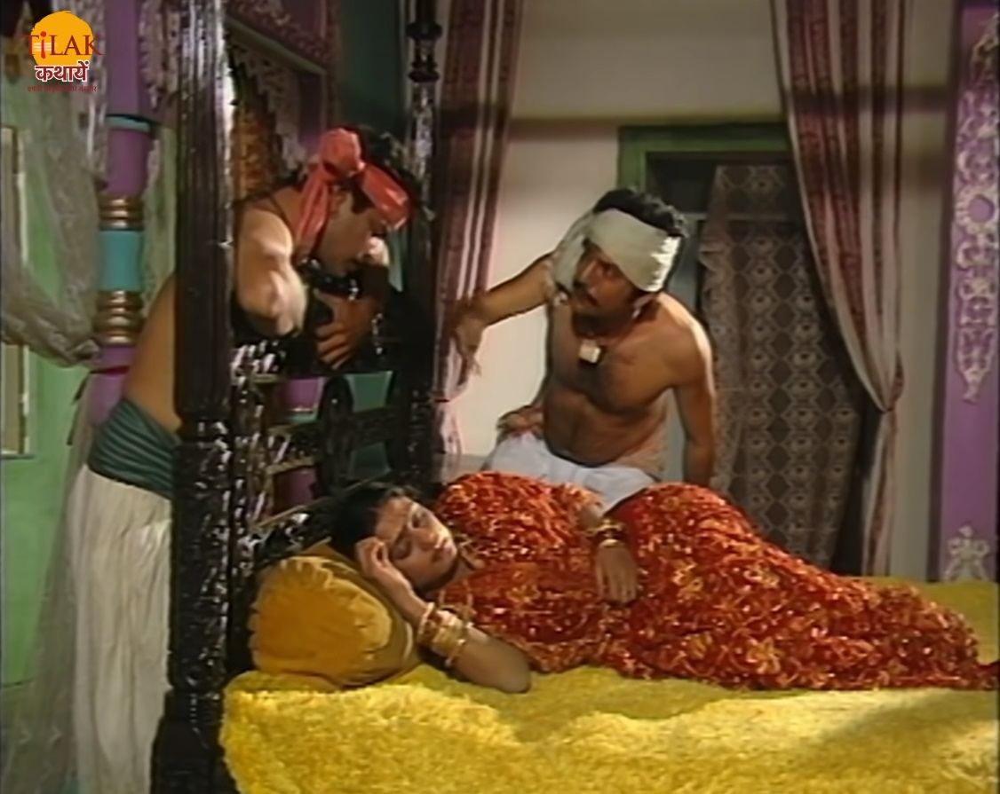
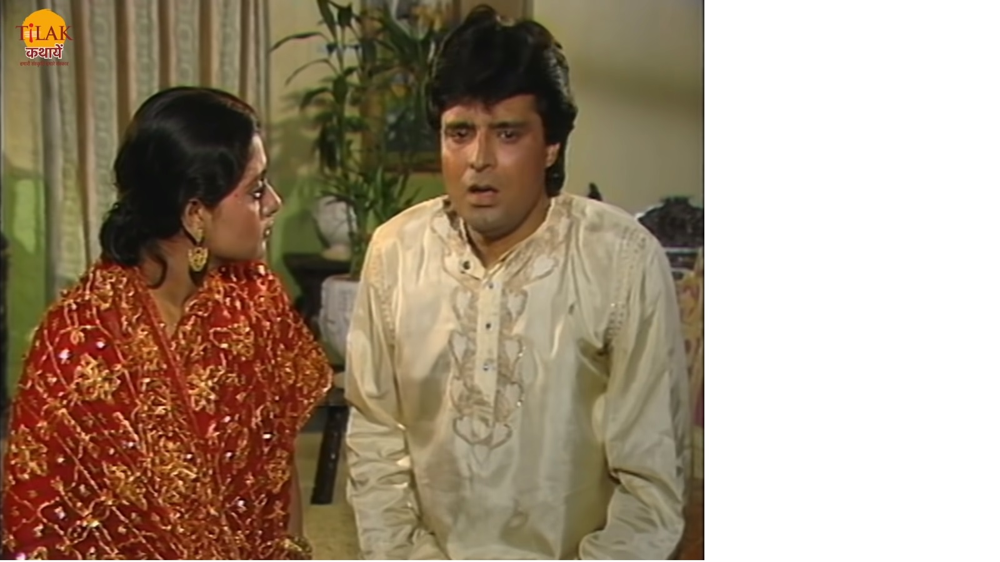

बेताल को विक्रम फिर से पकड़ लेता है और अपने कंधे पर डाल कर ले चलता है। बेताल विक्रम को फिर से एक काहनी सुनता है जिसमें एक अनंतपुर नाम का नगर था जिसमें एक धर्मदत्त नाम का युवक था वो मदनसेना नाम की लड़की से प्रेम करता था। वह उसके बिना नहीं रहना चाहता था वह उसके सामने अपने प्रेम को ज़ाहिर करता है लेकिन मदनसेना उसे मना कर देती है तो धर्मदत्त अपने प्राण देने की बात करता है और नदी में कूद जाता है मदनसेना उसे बचाने के लिए उसके पीछे कूद जाती है और उसे बाहर निकल लेती है। उसे बचाने के बाद भी मदनसेना उसके प्रेम को ठुकरा देती है। समुद्रदत्त के माता पिता अपने बेटे का रिश्ता लेकर मदनसेना के घर जाते हैं। धर्मदत्त मदनसेना से कहता है की यदि वो पूनम की रात को उस से मिलने के लिए नहीं आयी तो वो अपनी जान दे देगा। मदनसेना अपने घर चली जाती है और उसका रिश्ता समुद्रदत्त से कर दिया जाता है और दोनों का विवाह भी हो जाता है।
| समुद्रदत्त मदनसेना को अपने साथ लेकर अपने घर पहुँच जाते हैं। उनके नगर में दो चोर थे वो उनके घर चोरी करने आते हैं तो एक चोर मदनसेना को सोते देखता है और उसे देख कर मोहित हो जाता है तभी वहाँ कुछ लड़कियाँ आ जाती है उनसे छिपने के लिए दोनों चोर छिप जाते हैं। एक लड़की उन्हें देख कर चोर चोर चिल्ला पड़ती है तो वो दोनों वहाँ से भाग जाते हैं। चोर मदन सेना के ख़यालों में खो जाता है। मदनसेना को धर्मदत्त की चिंता होती है क्योंकि पूनम की रात को धर्मदत्त ने अपने प्राण देने की बात कही थी। मदनसेना जैसे ही वहाँ से जाती है तो समुद्रदत्त वहाँ आ जाता है और उस से पूछता है की वो कहा जा रही थी तो मदनसेना उसे बता देती है की वो धर्मदत्त से मिलने जा रही है और यदि वो ना गयी तो धर्मदत्त अपनी जान दे देगा और इसके लिए वो खुद को कभी माफ़ नहीं कर पाएगी। मदनसेना समुद्रदत्त से जाने की आज्ञा माँगती है तो वो क्रोध में आकर उसे जाने के लिए कह देता है और पीछे पीछे तलवार लेकर चल पड़ता है। मदनसेना जैसे ही नगर से बाहर निकलती है तो वो चोर उसे देख लेता है और रोक लेता है और जाने नहीं देता। मदनसेना उस से प्रार्थना कारती है की वो उसे जाने दे वरना धर्मदत्त मार जाएगा। चोर मदनसेना को एक शर्त पर जाने के लिए कहता है की वापस लौटते समय वो उस से भी मिल्कर जाएगी। मदनसेना उसकी बात मान लेती है और आगे बध चलती है। चोर भी मदनसेना के पीछे पीछे जाता है। मदनसेना धर्मदत्त के घर पहुँच जाती है जैसे ही मदनसेना को दुल्हन के लिबास में और माँग में में सिंदूर धर्मदत्त देखता है तो वो पूछता है की ये सब क्या है तो मदनसेना उसे बता देती है की आज उसकी शादी हो गयी है। मदनसेना की शादी की बात सुन धर्मदत्त उसे कहता है की वो यहाँ क्यों आयी है जब उसकी शादी हो गयी है उसे वापस अपने पति के घर चले जाना चाहिए यह सब ठीक नहीं है। |  |
|  | और मैं तुमसे अब प्रेम भी नहीं कर सकता क्योंकि अब तुम किसी और की पत्नी हो और तुमसे प्रेम करना बहुत बड़ा पाप है। धर्मदत्त मदनसेना को जाने के लिए कहता है तो वह वापस लौट जाती है। यह सब चोर और समुद्रदत्त भी देख और सुन रहे थे। मदनसेना जब वापस लौटती है तो चोर उसे रोक लेता है और कहता है की इस दुनिया में क्या ऐसा हो सकता है की एक पति अपनी पत्नी पर इतना विश्वास करे की अपनी सुहागरत की रात को अपनी पत्नी को उसके प्रेमी से मिलने के लिए भेज दे और वहीं उसे स्त्री का वो प्रेमी जो प्रेमिका को सुहागन देख कर उस से प्रेम की बात भी कहना पाप समझता है। चोर यह सब देख और सुनकर हैरान हो गया था तो वह मदनसेना को जाने देता है और कहता है क्की तुम्हें देख कर माँ में जो पाप जगा था तुम्हें देख कर वही पाप स्वयं मिट गया। समुद्रदत्त रास्ते में ही अपनी पत्नी मदनसेना को रोक लेता है और उसे कहता है की वो उसके पीछे आया तो था तुम्हें धोखेबाज़ और बुरे चरित्र की स्त्री समझ कर लेकिन तुम्हें तो बहुत ही निश्चल और पवित्र हो और तुमहरे दिल में कितनी दया है। |
| Previous Story | Home | Next Story |